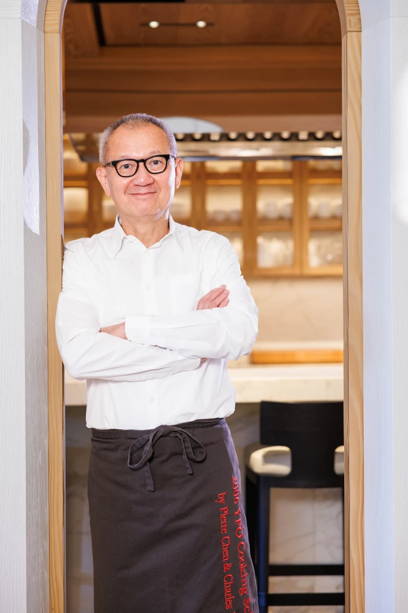
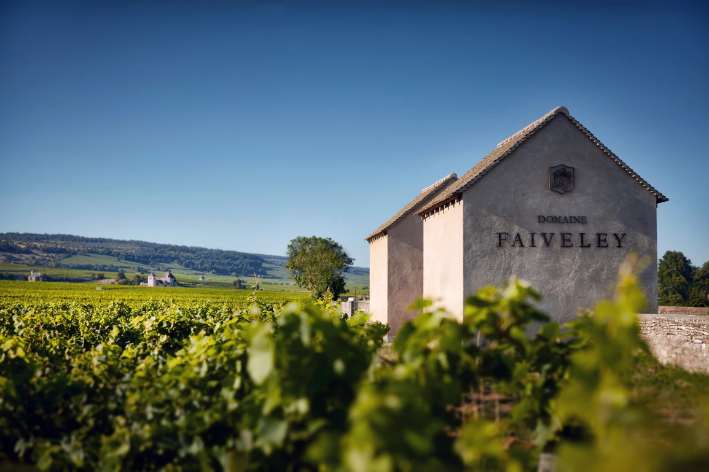
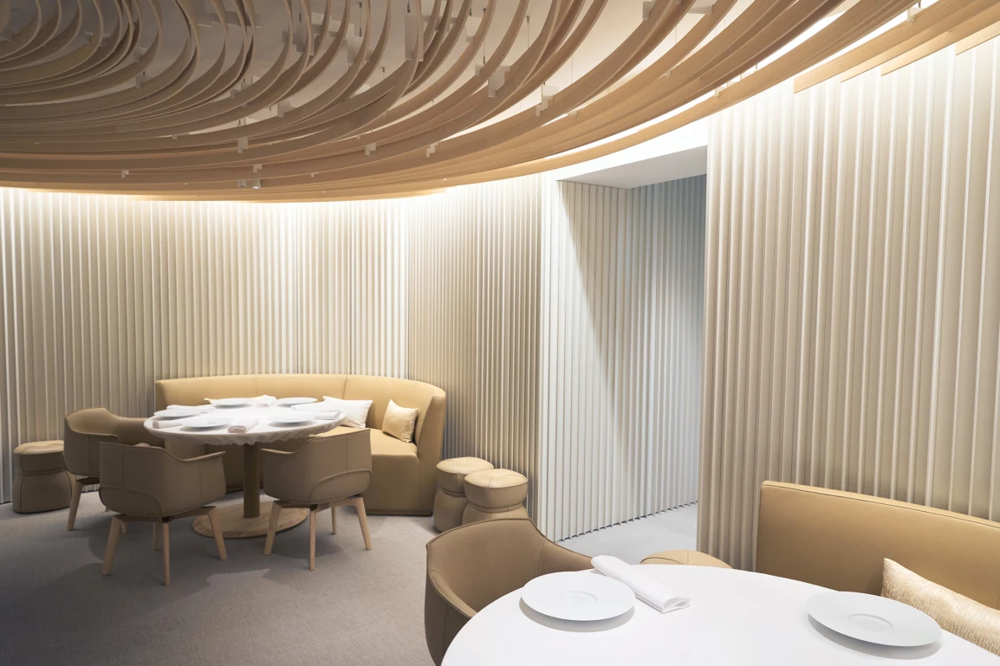
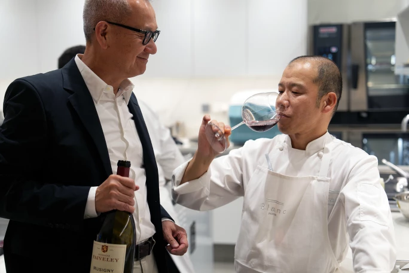

Sotheby's · 2023年11月16日
以下是兩個世界頂級臻藏的幕後故事——一個是藝術珍品，一個是美酒佳釀。這兩個收藏皆擁抱同一信念：生活中的美好事物，應與他人分享。亦因此信念，我們迎來一家新餐廳的矚目誕生。
紐約蘇富比將於2024年9月13日欣呈「寰宇百味・名釀珍饈」第四場洋酒拍賣「環球精選」，帶來世界各地重要產區的優質葡萄酒。陳泰銘先生精心蒐集逾四十載的傳奇窖藏，自去年起於蘇富比分為五個專場在全球開拍。本文原刊於是次全球拍賣系列首發之時，繼續閱讀以了解更多陳泰銘先生的窖藏珍釀，並瀏覽寰宇百味・名釀珍饈專頁緊貼拍賣系列的最新消息。
說起陳泰銘先生，大家都會想到他龐大宏偉的藝術選藏，而他人生中第一次收藏的經歷，至今仍為人津津樂道：他在台南國立成功大學求學期間，花光兩份兼職攢下的600美元，在市中心畫廊買了一件雕塑。這件雕塑至今仍傲然屹立於他在1977年創立的全球電子元件供應商—國巨公司的辦公室內。陳泰銘先生如今擁有享譽全球的現代和戰後藝術珍藏，而這件雕塑是他尋香識賞之旅的美麗起點，見證他歷遍人生的幀幀風景。
陳泰銘先生對葡萄酒的興趣始於家人的耳濡目染；在他年少的時代，台灣人大多喜歡威士忌，而他的家人卻對葡萄酒情有獨鍾，品味與眾不同。在投身事業、開始四周遊歷後，他逐步發掘法國、義大利和加州的美酒，而且一如30年前許多新手藏家那樣，開始收藏波爾多葡萄酒。為了更深入認識這門學問，他全心投入學習正統的葡萄酒鑑賞，熟習不同地區和酒莊的特質，不吝花時間親身探索和品鑑各類佳釀，感受每瓶酒在口感和味道上的細微差別。

高瞻遠矚的美食家及美學家陳泰銘先生
經過認真研究和品嚐後，陳泰銘先生得出一個結論：波爾多葡萄酒勁力充沛，細緻而乾澀的單寧非常適合搭配羊肉或牛肉；但從烹飪角度而言，布艮地葡萄酒更為百搭，亦更切合他在台灣的生活方式，因為台灣是個海島，美食以大量鮮嫩的海鮮為主。他發現布艮地酒在味道和口感上更和諧精緻，自此他不再跟從固有的餐酒搭配原則—即紅酒配紅肉、白酒配白肉和魚肉的定律，而是按照自身經驗，以別出心栽的方式搭配他喜愛的美酒佳餚。陳泰銘先生由收藏家變為美食家，反映出他對珍饈佳釀的熱愛，亦彰顯出他的信念：要充分欣賞美酒，就要投入創意和心思。「要獲得一瓶好酒或預訂到一間好餐廳，只要有錢就能辦到，並非難事。然而懂得配搭適宜的食物和酒才是關鍵。我感興趣的是兩者如何能雙劍合璧，互相昇華」，他解釋道。
在見證著各地美酒佳餚相遇的同時，陳泰銘先生繼續購藏東西方藝術傑作，不斷豐富國巨基金會的珍藏。他經常借出藏品予倫敦泰特現代美術館和東京國立近代美術館等機構展出，願助一臂之力推廣藝術文化；同樣的原則也適用於他精心搜羅的各地佳釀。陳泰銘先生收藏美酒的態度明確，他搜購各式珍釀，並不是為了將它們藏於酒窖、讓其蛛網塵封，而是為了開瓶品嚐，與眾同樂。
除了在餐廳用餐，陳泰銘先生近來也喜歡在放滿藝術品的家中款客。他廚藝出色，在家招待親朋好友時，往往會親自下廚，尤好以鐵板燒宴客。悉心佈置的餐桌上放滿時令新鮮的烤物，還有他從窖藏細選的珍稀美酒，每每讓客人賓至如歸。
「每個美食家在生命中的某個時刻，都夢想過擁有自己的葡萄園，陳泰銘先生亦不例外。在構思生產一種最能配合他日常飲食的葡萄酒時，其心頭好布艮地立即浮現眼前。」
除此之外，陳泰銘先生還會以自家出產的葡萄酒來招待客人。每個美食家在生命中的某個時刻，都夢想過擁有自己的葡萄園，陳泰銘先生亦不例外。在構思生產一種最能配合他日常飲食的葡萄酒時，其心頭好布艮地立即浮現眼前。他亦想起曾喚醒他無窮熱情的幾款美酒，如充滿活力、層次分明、散發李子和櫻桃香氣的1971年羅曼尼康帝（Domaine de la Romanée-Conti）La Tâche，或者是豐富而和諧的1976年 Faiveley Musigny。他希望在布艮地氣候風土最佳的地方購入一塊土地，並為此仔細研究多時。經過幾年尋覓磋商，他終於在2015年11月與酒莊Domaine Faiveley合作，在夜丘區（Côte de Nuits）特級園Musigny購入一小塊土地，由酒莊負責栽種葡萄並釀造葡萄酒，每年定期向他提供有關當地天氣和葡萄園狀態的資訊，並供給25至30箱1.5公升瓶裝Musigny—他長久以來的美夢終於成真了。

DOMAINE FAIVELEY 酒莊 CABOTTES CLOS VOUGEOT。相片提供：SERGE CHAPUIS, MARK VOLK
陳泰銘先生與巴黎、台灣和日本等地許多大廚惺惺相惜。他認為，在大廚們的餐廳裡用餐是共同創造回憶的好機會。他會提前致電餐廳詢問菜單，再決定攜帶哪一瓶美酒搭配，堅持起來絕不馬虎。「我喜歡與廚師分享美酒。他們通常依賴侍酒師為客人配酒，卻不常親自體驗葡萄酒與他們烹調出來的菜餚的搭配效果」。另外，他有感很多才華洋溢但年紀輕輕的侍酒師，對餐飲配搭的知識大多偏向學術理論，因此他樂於與他們分享品鑑葡萄酒的親身經驗，不遺餘力提攜人才。

Le Restaurant Blanc
經過六年發展，陳泰銘先生現正踏入美食之旅的另一階段。他將與法國首位摘下米其林二星的日裔法國廚師佐藤伸一合作，在巴黎第16區開設餐廳Le Restaurant Blanc。這家餐廳體現了陳泰銘先生對美好生活的不同方面的理念，並透過精心設計的用餐體驗，將他在家中實踐的分享哲學帶給更多人。

陳泰銘先生與主廚佐藤真一
陳泰銘先生觀察道：「我和佐藤的鑑賞品味非常相似。他精選最上乘的食材，以簡單方法烹飪，保留了原來的味道和精髓。」佐藤曾在Domaine Dujac 和 Domaine Roulot工作，與陳泰銘先生一樣熱愛葡萄酒，尤其是布艮地美酒。Le Restaurant Blanc的酒單有7,000瓶佳釀，琳琅滿目，當中包括許多不為人知的瑰寶，以及最適合搭配菜品的精選酒款。
陳泰銘先生和佐藤這對合作夥伴可謂一拍即合，他們皆秉持「精巧、簡單、細緻」的理念，明白簡單最考功夫，需要刻意努力，而且兩人都樂於與眾人分享其美學願景。佐藤說：「Passage 53在2011年成為米其林兩星餐廳時，只有20個座位。在有限的空間下令我難以大展拳腳。然後有一天，陳泰銘先生說他可以幫忙。」這是佐藤生涯的一個轉捩點。「很多人往往只關心合夥生意的財務狀況，但陳泰銘先生是一位風雅之士，態度認真，品位出眾；他深諳美食之道，亦會每天細嚐美酒。」
「對陳泰銘先生而言，生活雖然萬變，卻不離其宗。在各方各面，他始終堅持追求『卓越、和諧、慷慨』這幾個核心價值。」
對陳泰銘先生而言，生活雖然萬變，卻不離其宗。在各方各面，他始終堅持追求「卓越、和諧、慷慨」這幾個核心價值。在長達30年的尋香識賞之旅，他所蒐集的美酒種類既廣且深。一開始，他只為與親朋好友和名廚夥伴共聚暢飲，然而隨著熱情和知識越漸提升，他的酒藏越見豐富多樣。獨樂不如眾樂，現在他希望透過「寰宇百味 · 名釀珍饈」這系列拍賣，將小部分重要窖藏公諸同好。
此前所未見的拍賣系列將以一連五場專場拍賣會的形式進行。第一場將於11月23日至25日在香港舉行，旨在向大家展示這包羅萬象窖藏的視野和品質，隨後的四場拍賣則會重點呈獻特定類型的葡萄名酒或窖藏的某一部分。下一次拍賣將於2024年7月舉行，分別為巴黎的「極致香檳」及博納的「葡萄園之最」拍賣會，讓人翹首以待。此拍賣系列示意著陳先生踏入其品味之旅的新章節——他渴望向全球各地的美食家分享佳釀，與大家在此旅途上攜手同行，享受生活的種種美好。